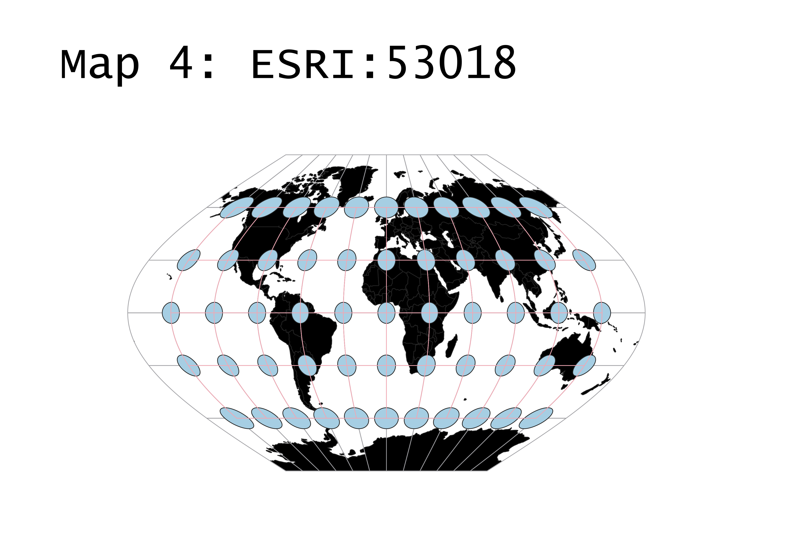
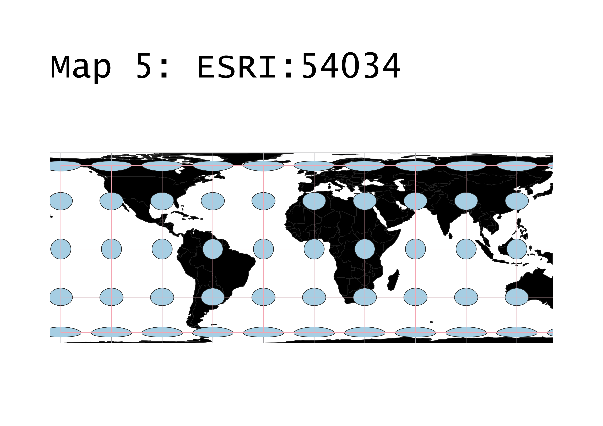

Suzanne Tyler
GEOG 370-006
Homework 3
This map is a great basic map and is very commonly used in mapping softwares and projects. It seeks to find a balance between distortions of shape and area. Areas closest to the equator are most representative of true form, while areas close to the poles are more distorted. This is especially clear when looking at Greenland, which appears to be much larger than life on this map.

This map is very similar to the first, but it varies in one major aspect: as the map gets closer to the poles, it stays verticlaly proportionate instead of getting compressed. It's a nice map, I like it.

This map is interesting becuase it is not an ESPG projection, which is why I decided to include it in this project. I was expecting something grand, but it's nearly the same as the ESPG:4326 map. This raises some questions for about what exactly the letters in the name mean.

This map is very similar in many aspects to those above, with one important exception. Instead of forming a convenient square shape, it forms an irregular shape in order to convey a more globe like appearance. This allows the map to have less distortion near the poles.
This map conserves area over everything else. Greenland is techincally the same area of land in this map as it is on a globe. However, this comes at the cost of a distortion of shape. The areas near the poles on this map are very compressed.
